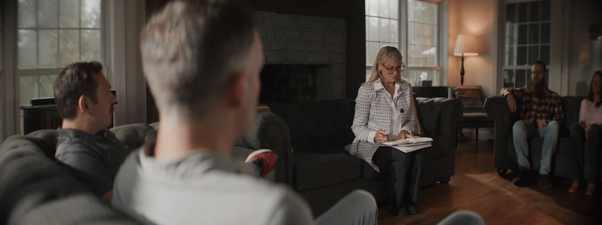

מפת הדרכים לטיפול
כל מסע מתחיל בצעד אחד. המפה הזאת מציגה את הדרכים האפשריות לטיפול בפוסט-טראומה.
שלב
חמישה שלבים
לא חייבים להתחיל מהשלב הראשון. זו מפה, לא סדר.
-
התחלה עצמאית
כלים שאפשר להתחיל מיד, ללא צורך בתור או תשלום.
איך מתחילים?
כנס/י לדף "כלים לעזרה עצמית" ובחר/י את הכלי הנוח לך. תרגילי נשימה, קרקוע, ניהול שינה - הכל זמין עכשיו.
-
פנייה לקופ"ח / מרכזי חוסן
הקופות מספקות שירות פסיכולוגי ופסיכיאטרי. מרכזי החוסן מציעים שירות ייחודי לנפגעי פעולות איבה.
איך מתחילים?
1. פנה/י לרופא/ה הראשוני/ת בקופ"ח שלך וביקש/י הפנייה לפסיכולוג/ית 2. לנפגעי פעולות איבה - פנה/י למרכז החוסן הקרוב לאזור מגוריך, מתוך רשימת מרכזי החוסן המלאה 3. מכבי: 3555 | כללית: 8703\* (מוקד בריאות הנפש) | מאוחדת: 3833 | לאומית: 507

-
טיפולים ממוקדי טראומה
טיפולים פסיכולוגיים שעוסקים באירוע הטראומטי ובהשפעותיו - הזיכרונות, המחשבות, הרגשות וההימנעות שנוצרו בעקבותיו. לחצו על כל שיטה כדי לראות איך מתחילים.

-
טיפולים גוף-נפש ומשלימים
שיטות מבוססות-גוף ושיטות מתחום הרפואה המשלימה, שעובדות עם הנשימה, התנועה, המגע, ההרפיה ותשומת הלב. לחצו על כל שיטה כדי לראות איך מתחילים.
-
טיפול תרופתי
טיפול בתרופות שמטרתו ויסות עוצמת התגובות של פוסט-טראומה.
איך מתחילים?
טיפול תרופתי ל-PTSD ניתן רק על ידי פסיכיאטר/ית. התרופות הנפוצות ביותר הן מקבוצת SSRI/SNRI. פנה/י לרופא/ה ראשוני/ת לקבלת הפנייה לפסיכיאטר/ית.
איפה אפשר לקבל טיפול
רשימה של מסגרות שבהן ניתן טיפול: קופות החולים, מרכזי החוסן, אגף השיקום, עמותות ומרפאות מטיב, עם פרטי פנייה לכל אחת.
ער"ן, עזרה ראשונה נפשית, זמין בכל שעה. במצב חירום רפואי: מד"א 101.